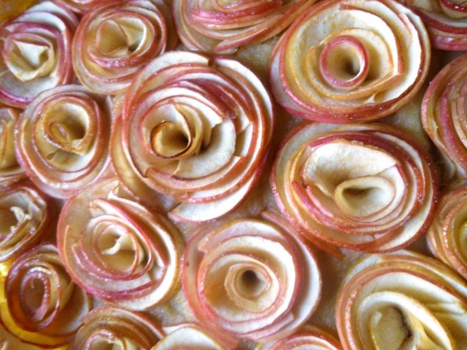
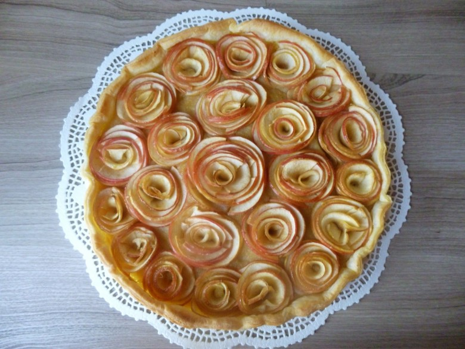
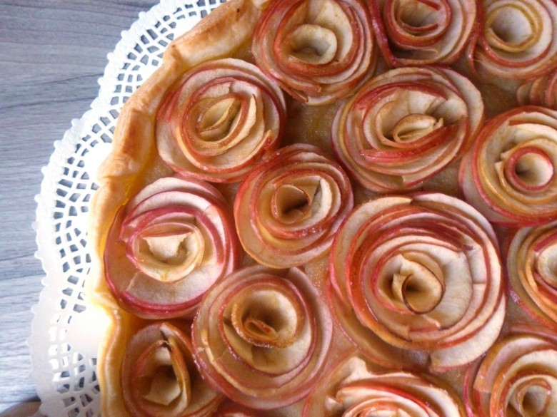

Tarte aux pommes bouquet de roses

Une délicieuse et splendide tarte aux pommes bouquet de roses.
Cette tarte m’aura donné du fil retordre! Mais le résultat est tellement beau que je ne regrette pas le temps passé dessus ! Cette tarte est inspirée de celle d’Alain Passard qui est un chef cuisinier français, propriétaire du restaurant parisien trois étoiles L’Arpège.
Quand je l’ai vu il fallait à tout prix que je la fasse! J’ai alors profité d’un repas de famille pour me lancer (et j’ai bien fait de m’y prendre la veille!!)
Le travail des pommes n’est pas évident du tout alors si vous voulez la tenter achetez deux à trois pommes de plus car vous risquez d’avoir un peu de perte jusqu’à avoir le coup de main!
Au départ je voulais faire une pâte sablée, mais en me documentant un peu j’ai lu qu’elle était bien meilleure avec une pâte feuilletée . Quant aux pommes il s’agit de pommes Pink lady qui, de part sa coloration rose, est parfaite pour faire de jolies pétales pour obtenir un joli bouquet de roses.
Je vous donc laisse découvrir la recette de cette délicieuse tarte aux pommes bouquet de roses!
Ingrédients
- pommes pink lady - 5
- beurre doux - 20 g
- sucre - 25 g
- eau - 1 verre
- pommes pink lady - 6
- pâte feuilletée - 1
Instructions
- Éplucher les pommes et couper les en morceaux grossiers
- Dans une casserole, à feu doux, faire fondre le beurre
- Ajouter les morceaux de pommes et remuer
- Ajouter le sucre et le verre d'eau
- Laisser compoter sur feu doux pendant une bonne demi-heure
- Pour obtenir une compote sans morceaux et bien homogène passer la ensuite au mixeur
- Réserver
- Placer votre pâte à tarte dans votre plat et piquer la avec une fourchette
- Étaler uniformément la compote sur la pâte à tarte
- Enlever le cœur des pommes
- Ne SURTOUT PAS éplucher les pommes
- Les couper avec une mandoline ou un économe en très fines lamelles (1mm d'épaisseur)
- Si vous obtenez d'assez longues lamelles, il vous suffit alors de les rouler sur elles mêmes pour leurs donner la forme d'une rose et les enfoncer très légèrement dans la compote pour ne plus qu'elles bougent. Si vous obtenez de petites lamelles, assembler les entres elles en les tenant bien fermement et déposer les dans la compote, là encore, pour qu'elles gardent leurs formes.
- Placer les roses avec le coté où il y a de la peau toujours vers le haut Attention: Ne faites pas comme moi, si vous utilisez une mandoline, mettez bien la protection car perso je me suis retrouvée avec le bout du doigt tout plat, le reste étant passé à la mandoline^^ J'ai dû appeler mon chéri à la rescousse pour finir de les couper, quant à moi (avec mon doigt en moins!) je m'occupais de les assembler 🙂
- Une fois toutes les roses placées sur l'ensemble de la tarte, badigeonner les de beurre et saupoudrer d'un peu de sucre
- Enfourner à 180° pendant 30 min (le temps de cuisson pouvant varier d'un four à l'autre, je vous conseille de vérifier régulièrement la cuisson afin que les pommes ne noircissent pas)



Les tips de la communauté
Tarte très belle visuellement qui plaît à de nombreux lecteurs. Cependant, plusieurs commentateurs ont rencontré des difficultés de façonnage et ont proposé des méthodes alternatives, indiquant que la recette est technique.
Astuces
- Utiliser une mandoline pour découper les pommes en lamelles régulières
- Précuire les pommes 5 min dans un sirop citronné pour les ramollir et faciliter le façonnage
- Utiliser un gobelet en plastique coupé comme moule pour façonner les roses, puis congeler
- Confectionner des bandes de pâte feuilletée rectangulaires pour enrouler les pommes
- Utiliser un appareil à spirale pour découper plus facilement les pommes
Variantes suggérées
- Utiliser des pommes Jonagold de la région pour plus de saveur
- Ajouter des morceaux de chocolat dans la compote pour plus de gourmandise
- Utiliser différentes variétés de pommes selon préférence et disponibilité
Ajustements signalés
- Le façonnage en roses est technique et nécessite de la pratique
- Ne pas faire la tarte la veille car les pommes oxydent et s'assombrissent
- Éviter trop de pâte feuilletée qui alourdit le dessert